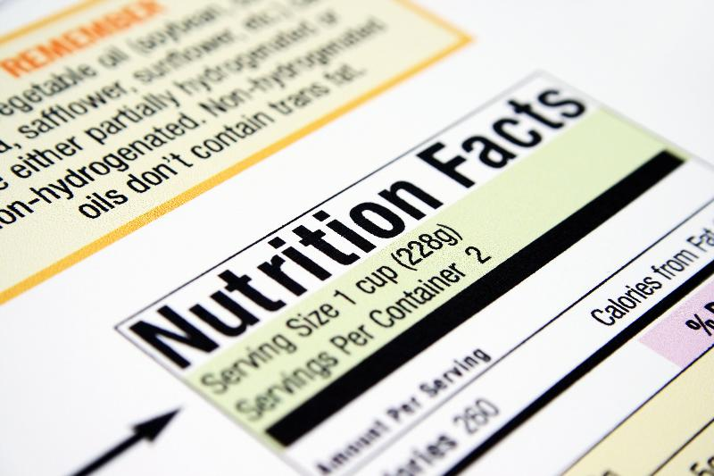
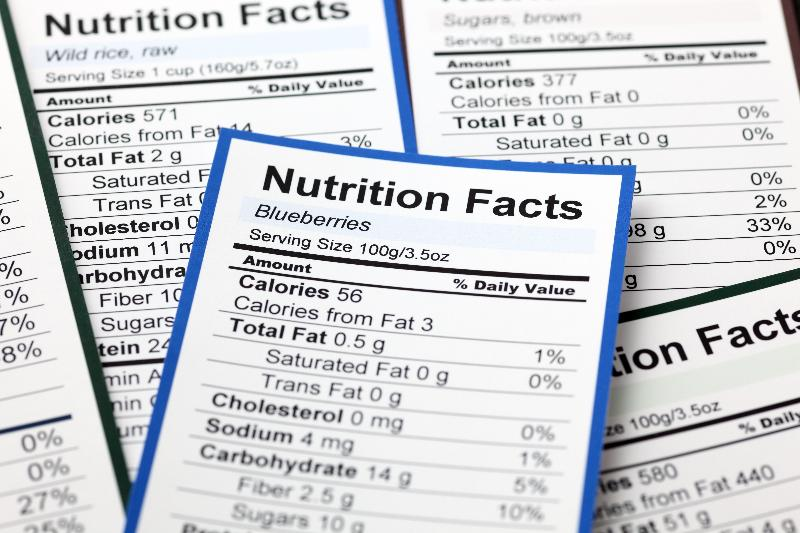

Unit Learning Object
- 1.5 Use food labels to make healthy food choices.
- 1.5.1 Identify the nutrients required on the Nutrition Facts Label.
- 1.5.2 Apply daily values to nutrient claims on food labels.
- 1.5.3 Identify nutrient, health, and structure-function claims on food labels.
By 2021, the FDA required new Nutrition Facts labels for packaged foods to reflect new scientific information, including the link between diet and chronic diseases such as obesity and heart disease. Currently, food labels in the marketplace reflect the new standards.

Highlights of the new Nutrition Facts Labels
- Increased type size for "calories", "servings per container", and "serving size" to ensure consumers see this information
- Bolding of "calories" and "serving size"
- Manufacturers must declare actual amounts and the % daily value for vitamin D, calcium, iron, and potassium. Vitamin D and potassium replace vitamin A and vitamin C as required nutrients on labels. They can still voluntarily list amounts for other vitamins and minerals.
- The footnote is changing to better explain what percent Daily Value means. It will read: "*The % Daily Value tells you how much a nutrient in a serving of food contributes to a daily diet. 2,000 calories a day is used for general nutrition advice."
- "Added sugars" in grams and as percent Daily Value will be included on the label.
- While continuing to require "Total Fat", "Saturated Fat", and "Trans Fat" on the label, "Calories from Fat" is being removed.
- Serving sizes are updated based on the amounts of foods and beverages people consume, not what they "should be" consuming. i.e., Ramen noodles will now have a label for the entire package rather than for 1/2 block.
- For products that are larger than a single serving but that could be consumed in one sitting or multiple sittings, manufacturers will display product "dual column" labels to show the number of calories and nutrients on both a "per serving" and "per package/unit" basis.

Some things haven't changed on food labels. In addition to the changes and additions listed above, cholesterol, total carbohydrate, dietary fiber, and protein are still required.
Ingredient Lists
Ingredients are listed in order of content, by weight, starting with the largest ingredient. As a rule, anything added to a food or beverage must be listed in the ingredients, including nutrients, preservatives, food colorings, and others. Focus on the first three ingredients to see what you are mostly consuming. If any of those are undesirable, such as added sugar, your product may not be very healthy.
Reading the Nutrition Facts Labels

The first place to start when you look at the Nutrition Facts label is the serving size and the number of servings in the package. Serving sizes are standardized to make it easier to compare similar foods; they are provided in familiar units, such as cups or pieces. The size of the serving on the food package influences the number of calories and all the nutrient amounts listed on the top part of the label. Pay attention to the serving size, especially how many servings there are in the food package. Then ask yourself, "How many servings am I consuming"?Serving Sizes & Calories
- Serving sizes represent typical sizes. i.e. the serving size for Ramen noodles is now the whole block since that is what most people tend to eat.
- The label numbers are based on one serving.
- The calories are larger and more noticeable.
Required Nutrients on the Food Label That We Need to Consume MORE of:
- Dietary Fiber
- Vitamin D
- Calcium
- Iron
- Potassium
Required Nutrients on the Food Label That We Need to Consume LESS of:
- Saturated Fat
- Trans Fat
- Cholesterol
- Sodium
- Added Sugars
How to Interpret Daily Values
The % Daily Values (% DVs) are based on the Daily Value recommendations for key nutrients based on a 2,000 calorie daily diet, an "average" calorie intake. Although you may not know how many calories you consume in a day (and probably don't eat the same amount of calories daily), you can still use the %DV as a frame of reference. The %DV helps you determine if a serving of food is high or low in a nutrient.
You do not need to know how to calculate percentages to use the %DV. The label does the math for you. It helps you interpret the numbers (grams and milligrams) by putting them all on the same scale for the day. Each nutrient is based on 100% of the daily requirements for that nutrient (for a 2,000 calorie diet). Think of Daily value as a "budget" - it will tell you what percentage of your allowance you are using by consuming one serving of that food. The % Daily Value will also help you compare one food item with another, but make sure you compare equal serving sizes.
| NUTRIENT |
DAILY VALUE |
GOAL |
|---|---|---|
|
Total Fat |
65 grams |
Keep less than |
|
Saturated Fat |
20 grams |
Keep less than |
|
Cholesterol |
300 mg |
Keep less than |
|
Sodium |
2,400 mg |
Keep less than |
|
Total Carbohydrate |
300 grams |
At least |
|
Dietary Fiber |
25 grams |
At least |

Each nutrient listed above will be explained in further detail in other modules. Note that vitamins and minerals are not listed in the chart above. Although a % daily value is provided for vitamins and minerals on the label, each vitamin and mineral's % daily value is based on its specific recommendation (RDA). The higher the percent for vitamins and minerals, the better, except for sodium. A food with 20% or more of the daily value for a nutrient is an excellent source, while food with less than 10% doesn't contribute much. Nutrients with less than 5% of the daily value are considered "low".Except for the required nutrients, food manufacturers can list the other vitamins and minerals they choose, even if the contribution is negligible. Listing many nutrients is a way to let consumers think that a product is nutritious. However, it may not be, so checking the percentage is essential. The percent Daily Values listed for vitamins and minerals also do not specify if the nutrients are naturally occurring or added (enriched or fortified). The only way to know is to read the ingredients listed.
Understanding Label Claims
Reading Objective(s):
- Categorize claims used on food labels.
- Apply daily values to nutrient claims on food labels.
Among the claims that can be used on food and dietary supplement labels, there are three categories defined by FDA regulations: health claims, nutrient content claims, and structure/function claims. Health claims describe a relationship between a food substance (a food, food component, or dietary supplement ingredient) and reduced risk of a disease or health-related condition. Nutrient content claims describe the level of a nutrient in the product, using terms such as free, high, and low, or they compare the level of a nutrient in a food to that of another food, using terms such as more, reduced, and lite. Structure-function claims describe what the nutrient does in the body (its role or function).
Structure-function Claims
Structure/function claims may describe the role of a nutrient or dietary ingredient intended to affect the standard structure or function of the human body. For example, "calcium builds strong bones." In addition, they may characterize how a nutrient or dietary ingredient acts to maintain such structure or function. For example, "fiber maintains bowel regularity" or "antioxidants maintain cell integrity."
The Dietary Supplement Health and Education Act of 1994 (DSHEA) established some special regulatory requirements and procedures for using structure/function claims and two related types of dietary supplement labeling claims, claims of general well-being and claims related to a nutrient deficiency disease. Suppose a dietary supplement label includes such a claim. In that case, it must state in a "disclaimer" that FDA has not evaluated the claim. The disclaimer must also note that the dietary supplement product is not intended to "diagnose, treat, cure or prevent any disease" because only a drug can legally make such a claim. Structure/function claims may not link the nutrient or dietary ingredient's claimed effect to a disease or state of health leading to disease.
|
Type of Claim |
Examples |
|---|---|
|
Describes how the nutrient/ingredient affects the normal structure or function of the body. |
_____________helps build strong bones ____________helps promote urinary function |
|
Describes how the nutrient/ingredient maintains the normal structure or function of the body. |
_________helps maintain healthy cholesterol levels __________helps maintain immune function |
Nutrient Claims
Nutrient claims express the quantity or amount of a nutrient. For example, a food may be "high in fiber ."The Nutrition Labeling and Education Act of 1990 (NLEA) permits the use of label claims that characterize the level of a nutrient in a food (i.e., nutrient content claims) if they have been authorized by the FDA and are made in accordance with FDA's authorizing regulations. Most nutrient content claim regulations apply only to those nutrients that have an established Daily Value.
Nutrient claims are all about the amount or quantity of a nutrient in the food. If a food is high in vitamins or minerals, that is generally perceived to be a good thing. Whereas having a food that is high in saturated fat or sodium is considered a bad thing.
| CLAIM |
DEFINITION *Per serving, as listed on label |
|---|---|
|
Low Calorie |
Contains 40 calories or less per serving |
|
Low Sodium |
Contains 140 mg or less per serving |
|
Low Fat |
Contains 3 grams of total fat or less per serving (can also be applied to specific fat types) |
|
Free |
Contains 0.5 grams or less per serving |
|
Reduced |
Less than the comparison (unaltered) product |
|
Light |
1/3 fewer calories than the comparison food |
|
Good Source |
Provides between 10-19% of the daily value |
|
High in (Excellent Source) |
Provides at least 20% or more of the daily value |
Health Claims
Health claims express how a nutrient in the food helps prevent a specific disease or condition. The claim always mentions the disease. For example, "a diet high in fiber prevents colon cancer." Claims must meet certain criteria with supporting evidence and be approved by FDA. The FDA will evaluate the quality and strength of the totality of the scientific evidence before approval.
Reliable Health Claims:
- Calcium and reduced risk of osteoporosis
- Sodium and reduced risk of hypertension
- Dietary saturated fat and cholesterol and reduced risk of coronary heart disease
- Dietary fat and reduced risk of cancer
- Fiber-containing grain products, fruits, and vegetables reduced risk of cancer
- Fruits, vegetables, and grain products that contain fiber, particularly soluble fiber, and reduce risk of coronary heart disease
- Fruits and vegetables and reduced risk of cancer
- Folate and reduced risk of neural tube defects
- Sugar alcohols and reduced risk of tooth decay
- Soluble fiber from whole oats and from psyllium seed husk and reduced risk of heart disease
- Soy protein and reduced risk of heart disease
- Whole grains and reduced risk of heart disease and certain types of cancers
- Plant sterol and plant stanol esters and reduced risk of heart disease
- Potassium and reduced risk of hypertension and stroke
Claims posted by the manufacturers are designed to help sell the product. You won't see negative claims on products unless mandatory. Some negative information is now required to be listed on labels, such as food allergens. The Food Allergen Labeling and Consumer Protection Act (FALCPA), passed in 2004, was designed to improve food labeling information for the millions of consumers who suffer from food allergies. FALCPA identifies eight foods or food groups as the primary food allergens. They are milk, eggs, fish (e.g., bass, flounder, cod), Crustacean shellfish (e.g., crab, lobster, shrimp), tree nuts (e.g., almonds, walnuts, pecans), peanuts, wheat, and soybeans. Currently, there is voluntary labeling of foods that contain genetically modified ingredients.
Not all claims are authentic claims!
Be wary of vague claims using words such as "natural," "pure," and "healthy." There are no legal definitions for those terms, and they are usually used to make the product appear superior to its competitors or imply that the food item is good for you when it may not be.

Food Label Claims
Nutrient Claims express the quantity or amount of the nutrient. For example, a food may be "high in fiber" (>20% DV for fiber).
Structure-function Claims express what a nutrient does in the body. For example, a food may claim it maintains bowel regularity.
Health Claims express how a nutrient in the food helps prevent a specific disease or condition. The claim always mentions the disease. For example, a diet high in fiber prevents colon cancer.
Use what you have learned to complete these activities.